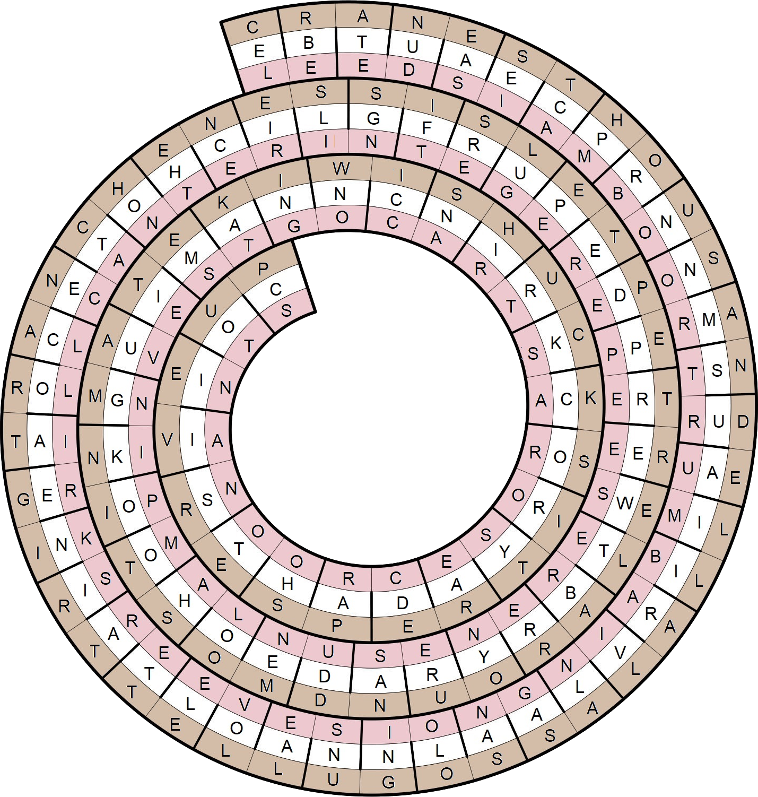

The middle path consists of a list of ice cream flavors -- scrambled, abutting one another, and each missing a letter. The missing letters in order spell TRIPLE SCOOP.

| String | Flavor | Missing Letter |
|---|
| EBTUAECPRN | BUTTERPECAN | T |
| NMSUAIIR | RUMRAISIN | R |
| VLAALN | VANILLA | I |
| NAOLTAINE | NEAPOLITAN | P |
| AOCETOHC | CHOCOLATE | L |
| ILGFRUPEDP | FUDGERIPPLE | E |
| REWTBRYRA | STRAWBERRY | S |
| DEOHOOKGUI | COOKIEDOUGH | C |
| MANNCNI | CINNAMON | O |
| RKCORYAD | ROCKYROAD | O |
| AHTSIIOC | PISTACHIO | P |
The path answers in order are:
- CELEBRATED: Threw a party, say
- UNEASIEST: Most on edge
- CAMPHOR: C10H16O
- BONUS: Pay on top of your pay
- NORMANS Participants in the Battle of Hastings
- TRUDEAU: Pulitzer-winning comic strip artist
- MILLIBAR: 100 pascals
- ALVIN: First name in American dance
- LASAGNA: A layered food (other than an ice cream roll)
- SOLOING: Taking the spotlight for a while
- UNSEAL: Open
- LOVE LETTER: Missive between mates
- AT RISK: In trouble
- NIGERIA: Chad's neighbor
- TROLL: Online troublemaker
- CANE: Walker's aid
- CATCH ON: Become suddenly popular
- THENCE: From that place
- RIESLING: German wine grape
- SIFTERS: Bakers' tools
- LUGE: Go downhill fast?
- PETERED: out (lost strength)
- PEPPERTREE: Peruvian evergreen
- SWELTER: Suffer from the heat
- BARREN: Lifeless
- YOURE: The Worst (TV show)
- SAND DUNE: Windswept creation
- MOOLAH: Cash
- STOMP: Don't remotely tiptoe
- OINKING: Saying "Give us some slop!", maybe
- MAUVE: Pale purple color
- ITEMS: Things
- TAKING ON: Adopting, as a responsibility
- WICCAN: Adherent of the Horned God
- SHIRT: Polo, for example
- RUCKSACK: Hiker's tote
- SORORITY: You might get there in a rush
- SEARED: Browned
- CRAPSHOOTERS: Some gamblers in the casino
- NAÏVE: Green
- INTO: Thoroughly digging
- UPCS: Bar codes